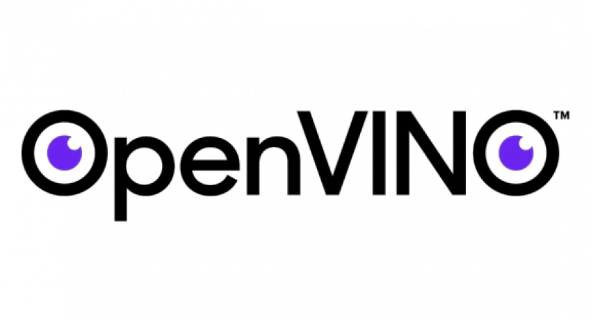
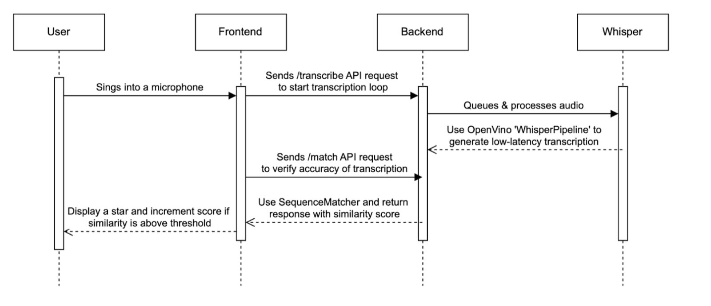

Implementation Overview
Key features and their technical implementation details
Main Technologies Used
-
Frontend:

React Native Windows - React Native is a frontend development framework based on JavaScript which enables the creation of native Windows desktop applications; the NAS schools primarily use Intel powered Windows devices. It allows for building accessible and visually engaging UI components suitable, and facilitates communication with the backend server through API requests.

YouTube Embed API - API by YouTube to integrate embedded video players directly into the application, allowing for the legal streaming of songs. Additionally, it provides timestamps and lyrics, useful for matching with the recognized text. - Backend:

Python - Python is used as the backend development language for Readingstar primarily due to its extensive libraries and frameworks for streamlining the integration of AI models. Openvino pipelines, pytorch, and transformers modules in Python allowed for the efficient development and deployment of AI models into the application
FastAPI serves as a framework for exposing Python functionality to the frontend through API endpoints. FastAPI was chosen over other frameworks like Django as it is faster and supports asynchronous programming, needed for handling live audio processing and serving data to the frontend in real-time. It works with an ASGI Uvicorn server for high performance handling of requests. - AI & ML:
OpenVino - Using the OpenVino toolkit developed by Intel to optimize the inference of these AI models for faster inference on Intel hardware, where most NAS schools use Intel hardware. Provides predefined pipelines for the AI models, and increases inference speed by 3-5x.

OpenAI Whisper - ASR model by OpenAI. Specifically the tiny.en model for fast transcription and focused on the english language.

HuggingFace AllMiniLM - Transformer based model for the semantic matching of texts.
YouTube Embedding & Lyric Synchronisation
Implementation of YouTube's IFrame API
Overview
YouTube's IFrame API is used to embed YouTube videos directly into the application. Subtitles are extracted from the video along with their timestamps to display the lyrics, and a progress bar is used to enhance the interactive experience.
Implementation Details
{!isFocusMode && (
<View style={styles.inputContainer}>
<TextInput
style={[
styles.textInput,
colorScheme === 'dark' && styles.textInputDark,
]}
placeholder="Paste YouTube URL here"
placeholderTextColor={colorScheme === 'dark' ? '#ccc' : '#999'}
value={inputUrl}
onChangeText={setInputUrl}
/>
<Pressable
style={({ pressed }) => [
{ backgroundColor: pressed ? '#005bb5' : '#0078d4' },
styles.goButton,
pressed && { backgroundColor: '#005bb5' },
]}
onPress={() => {
setYoutubeUrl(inputUrl);
getYoutubeEmbedUrl(inputUrl);
}}
>
<Text style={styles.goButtonText}>Go</Text>
</Pressable>
</View>
)}
const getYoutubeEmbedUrl = async (url: string): Promise => {
const videoId: string | undefined = url.split('v=')[1];
const ampersandPosition: number = videoId ? videoId.indexOf('&') : -1;
const finalVideoId: string | undefined = ampersandPosition !== -1 ? videoId.substring(0, ampersandPosition) : videoId;
setEmbedUrl(`https://www.youtube.com/embed/${finalVideoId}?autoplay=1&controls=0&encrypted-media=1`);
getSongTitle(url);
setVideoPlaying(true);
fetchYoutubeSubtitles(url);
try {
const response = await fetch('http://localhost:8000/close_microphone', {
method: 'GET',
headers: {
'Content-Type': 'application/json',
},
});
}
catch (error) {}
try {
const response = await fetch('http://localhost:8000/transcribe', {
method: 'POST',
headers: {
'Content-Type': 'application/json',
},
});
if (!response.ok) {
throw new Error(`HTTP error! status: ${response.status}`);
}
console.log('Transcription started');
} catch (error) {
console.error('Failed to start transcription:', error);
}
};
After extracting the video ID and embedding the video into the application, the getYouTubeEmbedUrl function interacts with YouTube's API to get the song title and calls fetchYoutube subtitles to fetch the subtitles for the video. The function then sends a GET request to the backend to ensure the microphone is closed before sending a POST request /transcribe to initiate the speech recognition process.
useEffect(() => {
if (currentTime) {
const elapsedTime = currentTime;
// Find the current lyric based on elapsed time
var currentLyric = lyrics.reduce(
(prev, curr) => (curr.time <= elapsedTime ? curr : prev),
{ lyric: '' }
).lyric;
// Only update and call startMatching if the lyric has changed
if (currentLyric !== previousLyricRef.current) {
console.log('Updating Lyric:', currentLyric);
previousLyricRef.current = currentLyric; // Update previous lyric
setCurrentLyric(currentLyric); // Update state
startMatching(currentLyric); // Call startMatching
checkMatch();
}
}
}, [currentTime, lyrics]);
checkMatch is called to evaluate the similarity between the recognized text and the current lyric; this method will be discussed in the "Evaluation & Scoring" section. The function also calls startMatching, providing the current lyric as a parameter.
const startMatching = async (lyric : string) => {
try {
await fetch('http://localhost:8000/update_lyric', {
method: 'POST',
headers: {
'Content-Type': 'application/json',
},
body: JSON.stringify({ lyric }),
});
} catch (error) {
console.error('Error starting phrase matching:', error);
}
};
The startMatching function sends a POST request /update_lyric to the backend to update the current lyric for the phrase matching process.
Additionally, a sliding bar is animated to show the progress of the current phrase being displayed.
useEffect(() => {
if (currentLyric) {
const currentIndex = lyrics.findIndex(lyric => lyric.lyric === currentLyric);
const nextLyric = lyrics[currentIndex + 1];
const duration = nextLyric ? (nextLyric.time - lyrics[currentIndex].time) * 1000 : 2000;
Animated.timing(animatedValue, {
toValue: 1,
duration: duration,
useNativeDriver: false,
}).start(() => {
animatedValue.setValue(0);
});
}
}, [currentLyric]);
This tracks the current lyric using the timestamp and animates a sliding progress bar. Once complete, the animation resets and the next lyric is displayed.
Automatic Speech Recognition
Implementation of ASR and integrating it into the application
Overview
Automatic speech recognition (ASR) is a key feature in Readingstar, allowing users to sing into a microphone, transcribe the audio in real-time and provide feedback.
Libraries and APIs
-
openvino_genai
Provides classes that contain pipelines for optimising inference on intel hardware, specific to the model.
optimumUsed to convert the format of AI models.
numpyUsed for preprocessing the audio for model inputs.
speechrecognitionCaptures audio from the microphone or audio file.
Implementation Details
# Set up OpenVINO and device
device = "AUTO"
# Adjust the model path to be relative to the executable location
model_dir = os.path.join(getattr(sys, '_MEIPASS', os.path.dirname(__file__)), "whisper-tiny-en-openvino")
# Check if the model directory exists
if not os.path.exists(model_dir):
raise FileNotFoundError(f"Model directory not found at {model_dir}")
# Check if the necessary model files exist
model_files = ["openvino_tokenizer.xml", "openvino_tokenizer.bin"]
for file in model_files:
if not os.path.exists(os.path.join(model_dir, file)):
raise FileNotFoundError(f"Model file {file} not found in directory {model_dir}")
try:
ov_pipe = ov_genai.WhisperPipeline(model_dir, device=device)
except Exception as e:
sys.exit(1)
An instance of the WhisperPipeline is used, along with the desired inference device to create the pipeline. The inference device is set to Auto as the application can run on CPU, NPU, and GPU devices. The pipeline selects the best available device for inference.
The parameters for ASR are defined after testing different energy thresholds and timeouts. Along with the ASR setup, shared variables are defined to store the previous and current lyric phrases, the current match, and the audio recording setup.
# Audio recording setup
energy_threshold = 500
record_timeout = 2.0
phrase_timeout = 3.0
phrase_time = None
data_queue = Queue()
recorder = sr.Recognizer()
recorder.energy_threshold = energy_threshold
recorder.dynamic_energy_threshold = True
# Shared variables
prev_verse = "" # The previous lyric phrase
current_verse = "" # The current lyric phrase
data_queue = Queue()
current_match = {"text": None, "similarity": 0.0}
source = sr.Microphone(sample_rate=16000)
The audio recording setup and shared variables are defined, ready for the ASR process to begin. The process is initiated through an API request from the frontend shown in the "YouTube Embedding & Lyric Synchronisation" section once a video starts playing. The API request invokes the process_audio method. The process_audio method combines two main functionalities, namely the live transcription of a phrase and the collection of audio data for the entire song.
# Transcription process
@app.post("/transcribe")
def process_audio():
"""
Record audio, process it, and compare it to the current lyric.
"""
print("Transcription process started")
global stop_call, source
with source:
recorder.adjust_for_ambient_noise(source)
stop_call = recorder.listen_in_background(source, record_callback, phrase_time_limit=record_timeout)
global phrase_time, phrase_timeout, recognized_text, stop_flag, recorded_audio
stop_flag = False
recorded_audio = io.BytesIO()
try:
while not stop_flag:
now = datetime.utcnow()
if not data_queue.empty():
#Collect chunk of audio data and append to queue
phrase_time = now
audio_data = b''.join(data_queue.queue)
audio_chunk = data_queue.get()
# Write audio chunk to recorded audio file
recorded_audio.write(audio_chunk)
data_queue.queue.clear()
# Convert audio data to numpy array and run the openvino whisper pipeline
audio_np = np.frombuffer(audio_data, np.int16).astype(np.float32) / 32768.0
genai_result = ov_pipe.generate(audio_np)
# Generate recognized text transcription
recognized_text = str(genai_result).strip()
print(f"Recognized: {recognized_text}")
else:
sleep(0.1)
print("Recording stopped, saving file...")
save_audio_to_file(recorded_audio.getvalue())
except Exception as e:
print(f"Error during transcription: {e}")
The transcription process starts by recording audio continuously, breaking it into chunks, and adding it to a buffer. As the audio is being processed, it uses a background listener to collect the audio data and pass it to the transcription system.
The method uses a queue system to handle chunks of audio data efficiently, ensuring smooth real-time transcription while simultaneously accumulating the entire song's audio.
The previously instantiated OpenVino pipeline is leveraged to transcribe the audio chunk, and the recognized text is stored for further use.
Process Sequence
The sequence diagram illustrates the flow of the ASR process, from the user singing into the microphone to the application displaying feedback, and the API requests carried out.
Evaluation & Scoring
Implementation of audio analysis and feedback
Overview
After the ASR process detailed in the previous section, the application evaluates the recognised phrase in real time. It provides immediate feedback to the user through visual indicators, and increments the score accordingly. Additionally, at the end of the session, a final score is generated to assess overall performance.
Libraries and APIs
-
optimum
Extracts the AllMiniLM model used for semantic matching and optimises it using openvino for inference.
transformersProvides AutoTokenizer for processing and tokenizing text inputs, to be used for comparison.
difflibUses SequenceMatcher to compare text sequences and measure similarity based on syntax.
sklearnComputes cosine similariy for evaluating semantic matching closeness.
torchProvides tensor operations and inference optimisation for the AllMiniLM model.
Implementation Details
const checkMatch = async () => {
try {
// Call GET /match to check if the server matched the current lyric
const response = await fetch("http://localhost:8000/match", {
method: "GET",
});
const result = await response.json(); // Expecting "yes" or "no"
if (result.match === "yes") {
setShowStar(true);
setScore(prevScore => prevScore + Math.round(result.similarity * 100));
setTimeout(() => setShowStar(false), 3000);
}
} catch (error) {
console.error("Error checking the match:", error);
}
};
The checkMatch function sends a GET request /match to the backend which initiates the phrase matching process.
# FastAPI endpoint to get the current match result
@app.get("/match")
def get_match():
"""
Get the current transcription match.
"""
global current_verse, prev_verse
global recognized_text
global threshold
global similarity_over_song
# remove brackets from the current verse
current_verse = current_verse.strip()
try:
if '[' in current_verse:
# remove the text between brackets
current_verse = current_verse[:current_verse.find("[")] + current_verse[current_verse.find("]")+1:]
if '(' in current_verse:
# get the text between brackets
current_verse = current_verse[:current_verse.find("(")] + current_verse[current_verse.find(")")+1:]
if '\n' in current_verse:
current_verse = current_verse.replace('\n', ' ')
except:
pass
if current_verse == "":
similarity = 0.0
return JSONResponse(content={"match": "no", "similarity": 0.0})
similarty_prev = SequenceMatcher(None, recognized_text, prev_verse).ratio()
similarity_curr = SequenceMatcher(None, recognized_text, current_verse).ratio()
similarities = [
(similarty_prev, prev_verse),
(similarity_curr, current_verse)
]
similarity, similarity_verse = max(similarities, key=lambda x: x[0])
print(f"\nSimilarity: {similarity}, \nSimilarity verse: {similarity_verse}, \nRecognized text: {recognized_text}")
similarity_over_song.append(similarity)
if (similarity > threshold) and recognized_text != "":
print(f"Last verse: {similarity_verse}", f"Recognized text: {recognized_text}", f"Similarity: {similarity}")
return JSONResponse(content={"match": "yes", "similarity": similarity})
return JSONResponse(content={"match": "no", "similarity": similarity})
The backend recieves the GET request and pre-processes the lyric to prepare for comparison. The similarity between the recognized text and the current lyric is calculated using SequenceMatcher from the difflib library. The similarity of the previously recognised phrase is also calculated in case of delayed recognition. The function then returns a JSON response with the match status and similarity score. The match status is set to "yes" if the similarity score exceeds the predefined threshold, otherwise it is set to "no".
The frontend awaits a response, and if the match status is "yes", a star animation is displayed, the score is incremented, and the star is hidden after 3 seconds.
if (result.match === "yes") {
setShowStar(true);
setScore(prevScore => prevScore + Math.round(result.similarity * 100));
setTimeout(() => setShowStar(false), 3000);
}
The score is incremented by multiplying the similarity score calculated by SequenceMatcher by 100 and rounding it to the nearest integer. The star animation is displayed for 3 seconds to provide feedback to the user.
Users can change the threshold for similarity to adjust the sensitivity of the matching process. This is done by allowing the users to choose between predefined thresholds by selecting one of the 'AI Difficulty' options in the application.
<Text style={styles.sectionTitle}>AI Difficulty</Text>
<ScrollView horizontal>
{[
{ label: 'Easy', color: '#22c55e' },
{ label: 'Medium', color: '#f97316' },
{ label: 'Hard', color: '#dc2626' }
].map(({ label, color }) => (
<Pressable
key={label}
style={({ pressed }) => [
styles.difficultyOption,
difficulty === label && { backgroundColor: color, borderColor: color },
pressed && { backgroundColor: '#e5e5e5' },
]}
onPress={() => {
setDifficulty(label);
switchDifficulty(label);
try{
fetch('http://localhost:8000/change_threshold', {
method: 'POST',
headers: {
'Content-Type': 'application/json',
},
body: JSON.stringify({ level: label }),
});
}
catch (error) {
console.error('Error changing difficulty:', error);
}
}}
>
<Text
style={[
styles.difficultyText,
difficulty == label ? { color: '#fff' } : { color },
]}
>
{label}
</Text>
</Pressable>
))}
</ScrollView>
The difficulty level is set by the user pressing one of the difficulty buttons, the default is medium. When the user presses the button, an API request /change_threshold is sent to the backend.
@app.post("/change_threshold")
def change_threshold(request: ThresholdLevel):
"""
Change the global threshold for the similarity check.
"""
level = request.level
global threshold
if level == "Easy":
threshold = 0.2
elif level == "Medium":
threshold = 0.35
elif level == "Hard":
threshold = 0.5
print(f"Threshold changed to {threshold}")
return JSONResponse(content={"message": f"Threshold changed to {threshold}"}, status_code=200)
The POST request is received by the backend and the threshold is updated based on the difficulty level pressed by the user. The thresholds are predefined after testing with different values and are set to 0.2, 0.35, and 0.5 for easy, medium, and hard respectively. Tests were done with students to determine the most suitable thresholds for each difficulty level.
At the end of the session, when a user completes a song, the microphone is closed and the score as well as final % accuracy is displayed to the user.
if (cTime === 'video_end') {
console.log('Video ended');
setVideoPlaying(false);
try {
await fetch('http://localhost:8000/close_microphone', {
method: 'GET',
headers: {
'Content-Type': 'application/json',
},
});
console.log('Microphone stopped');
} catch (error) {
console.error('Failed to stop microphone:', error);
}
await new Promise(resolve => setTimeout(resolve, 1000));
try {
const response = await fetch('http://localhost:8000/final_score', {
method: 'GET',
headers: {
'Content-Type': 'application/json',
},
});
if (!response.ok) {
throw new Error('Failed to fetch final score');
}
const data = await response.json();
setFinalScore(data.final_score);
console.log("Final Score:", data.final_score);
} catch (error) {
console.error("Error fetching final score:", error);
}
} else {
setCurrentTime(cTime);
}
The frontend listens for the 'video_end' event, which is triggered when the video ends. The microphone is then closed, and a GET request /final_score is sent to the backend. Once the microphone is closed, the process loop in the process_audio method is stopped, and the audio collected throughout the session is saved in a wav file.
@app.get("/final_score")
def final_score():
'''
Calculate the final score using the recorded wav and embedding similarity
'''
recognized_wav = None
global full_lyric
global similarity_over_song
s = process_time()
duration = 0.0
try:
with wave.open("recorded_audio.wav", "rb") as wf:
audio_data = wf.readframes(wf.getnframes())
audio_np = np.frombuffer(audio_data, np.int16).astype(np.float32) / 32768.0
duration = wf.getnframes() / wf.getframerate()
genai_result = ov_pipe.generate(audio_np)
recognized_wav = str(genai_result).strip()
except Exception as e:
print(f"Error during final transcription: {e}")
similarity= float(embedding_similarity_ov(full_lyric, recognized_wav))
t = process_time()
print(f"Final similarity: {similarity}")
print("Recognized wav: ", recognized_wav)
log_song(duration, sum(similarity_over_song) / len(similarity_over_song), similarity, str(t-s))
return JSONResponse(content={"final_score": similarity}, status_code=200)
This triggers the final_score method in the backend, which calculates the final score by comparing the entire song's lyrics with the recognised audio from the saved wav file of the entire session. The similarity is calculated using the embedding_similarity_ov function, which computes the cosine similarity between the lyrics and the recognised audio. The frontend is the updated with the evaluation.
(<View style={styles.overlay}>
<Text style={{ fontSize: 20, textAlign: 'center' }}>
Well done for completing the song "{songTitle}"!
</Text>
{score > 0 ? (
<Text style={{ fontSize: 20, textAlign: 'center' }}>
You won {score} points!
</Text>
) : null}
{finalScore > 0 ? (
<Text style={{ fontSize: 20, textAlign: 'center' }}>
You were {Math.round(finalScore * 100)}% accurate!
</Text>
) : null}
</View>)
The final score from live matching and accuracy from semantic matching are displayed to the user, providing feedback on their performance. The user is informed of the points won and the percentage accuracy achieved.
Playlist Management
Implementation of playlist and song management
Overview
Playlists and songs are stored in hierarchical JSON structure. Each playlist is an object containing an id, name, and an array of songs. Each song within a playlist has its own id, name, as well as a YouTube url. The user can create, delete, and edit playlists and songs, as well as add and remove songs from playlists in an efficient and scalable manner.
Implementation Details
{
"playlists": [
{
"id": 0,
"name": "Classic Nursery Rhymes",
"songs": [
{
"id": 0,
"name": "Humpty Dumpty",
"url": "https://www.youtube.com/watch?v=nrv495corBc"
},
{
"id": 1,
"name": "The Hokey Cokey",
"url": "https://www.youtube.com/watch?v=YAMYsNe7DMQ"
}
]
}
]
}
Users can select a playlist from the playlists panel in the right hand side. Once the selected playlist is pressed, the switchPlaylist function is called.
const switchPlaylist = (playlistName: string) => {
if (allPlaylistsGetter[playlistName]) {
setPlaylistLoaded(false);
setPlaylistName(playlistName);
console.log('Switching playlist:', playlistName);
setPlaylist(allPlaylistsGetter[playlistName]);
setPlaylistLoaded(true);
} else {
console.log('Playlist not found:', playlistName);
}
}
Users can add to the playlist by pasting a YouTube link to the input field at the top of the application.
// if url not in playlist, fetch song title
if (!title) {
console.log('Fetching song title...');
const response = await fetch(url);
const html = await response.text();
const titleIndex = html.indexOf('');
const titleEndIndex = html.indexOf(' ');
title = html.substring(titleIndex+7, titleEndIndex);
if (title.includes('YouTube')) {
title = title.substring(0, title.indexOf(' - YouTube'));
}
const songItem = {id: playlist.length, name: title, url: url};
setPlaylist([...playlist, songItem]);
allPlaylists[playlistName] = [...playlist, songItem];
setAllPlaylistsGetter(allPlaylists);
updatePlaylistJson([...playlist, songItem]);
fetchPlaylists();
}
If the song is not already in the playlist, the program adds the song to the current playlist in the frontend, and calls the updatePlaylistJson function.
const updatePlaylistJson = async (playlist : {id: number, name: string, url: string}[]) => {
try {
console.log('Updating playlist:', playlistName, "with", playlist);
await fetch('http://localhost:8000/update_playlist', {
method: 'POST',
headers: {
'Content-Type': 'application/json',
},
body: JSON.stringify({"name": playlistName, "songs": playlist, "action": "update"}),
});
} catch (error) {
console.error('Error updating playlist:', error);
}
};
The updatePlaylistJson sends an API request /update_playlist to the backend, sending as a parameter a JSON with the updated playlist objects, as well as the action to be performed in this case update.
# FastAPI endpoint for updating playlist JSON
@app.post('/update_playlist')
def update_playlist(playlist: dict):
"""
Update a playlist from the app interface.
"""
with open('playlists.json', 'r') as f:
allPlaylists = f.read()
allPlaylists = json.loads(allPlaylists)
print(f"\nUpdating playlist: {playlist}")
action = playlist.pop('action', None)
# check if this is a delete request
if action == "remove":
with open('playlists.json', 'w') as f:
for pl in allPlaylists["playlists"]:
if pl['name'] == playlist['name']:
song = playlist.pop('song', None)
if song:
for s in pl['songs']:
if s["name"] == song:
pl['songs'].remove(s)
print(f"Deleted song: {song}")
break
else:
allPlaylists["playlists"].remove(pl)
print(f"Deleted playlist: {playlist}")
break
# check if this is an add request
elif action == "create":
if playlist['name'] not in [pl['name'] for pl in allPlaylists["playlists"]]:
allPlaylists["playlists"].append(playlist)
print(f"Added playlist: {playlist}")
# update the playlist
elif action == "update":
for pl in allPlaylists["playlists"]:
if pl['name'] == playlist['name']:
pl['songs'] = playlist['songs']
print("Updated playlist: ", pl)
break
with open('playlists.json', 'w') as f:
f.write(json.dumps(allPlaylists, indent=4))
f.close()
return JSONResponse(content={"message": f"{action} completed."}, status_code=200)
The backend method update_playlist is used for all playlist management operations. The method reads the current playlist JSON file, and based on the action parameter, either adds, removes, or updates the playlist. In the case of adding a new song to a playlist, the update action is called, which updates the playlist with the new song to be saved in the JSON file. Deleting a song from a playlist also triggers the update action, this can be done by the user pressing the red icon next to the song title.
To delete an entire playlist, the user must press the red icon near the playlist name.
<SvgXml xml={deleteSvg} width={20} height={20} style={styles.iconTag} onPress={() => {removePlaylistJson(playlistName, song.name); fetchPlaylists()}}/>
When the icon is pressed, the removePlaylistJson function is called, similar to updatePlaylistJson, but with the action set to remove. This triggers a POST request to the backend update_playlist method with a "remove" action which pops all the songs from the playlist, deletes the playlist, and updates the JSON file.
To create a new playlist, a user must type the playlist name into the input field above the existing playlists and press the icon to the right of the input field.
<SvgXml
xml={createFolderSvg}
width={40}
height={40}
style={{ alignSelf: 'center', marginLeft: 5 }}
onPress={() => {
createPlaylistJson(newPlaylistName);
setNewPlaylistName('');
}}
/>
This triggers the createPlaylistJson function which is similar to the updatePlaylistJson function, but with the action set to create. This sends a POST request to the backend update_playlist method with a "create" action, which appends the new playlist to the JSON file if it does not already exist.
Accessibility Features
Implementation of assistive features
Overview
Various assistive accessibility features have been implemented such as customisable UI, font size, font style, colour schemes, and line spacing. These features are designed to cater users with assistive needs.
Implementation Details
<Pressable
style={({ pressed }) => [
styles.focusButton,
pressed && styles.focusButtonPressed,
isFocusMode && styles.focusButtonActive
]}
onPress={() => setIsFocusMode(!isFocusMode)}
>
Pressing the Focus Mode button sets isFocusMode to true.
<View style={styles.fullscreenBackground}>
{lyricsSettings.background === 'black' ? (
<View style={[styles.solidBackground, { backgroundColor: '#000000' }]} />
) : lyricsSettings.background === 'white' ? (
<View style={[styles.solidBackground, { backgroundColor: '#FFFFFF' }]} />
) : (
<Image
source={
lyricsSettings.background === 'curtain' ? require('./assets/curtain.jpg') :
lyricsSettings.background === 'stage' ? require('./assets/stage.jpg') :
lyricsSettings.background === 'concert' ? require('./assets/concert.jpg') :
null
}
style={styles.backgroundImage}
resizeMode="cover"
/>
)}
</View>
The video becomes full screen when focus mode is on, hiding all other panels, and the background can be set according to the user's preference. The background, along with other accessibility features, can be set through the settings panel.
<Pressable
style={({ pressed }) => [
styles.iconButton,
pressed && styles.iconButtonPressed,
]}
onPress={() => setShowSettingsModal(true)}
>
<SvgXml xml={settingsSvg} width={24} height={24} />
</Pressable>
Pressing the settings icon in the top right hand corner of the applications opens the settings panel. Within the settings panel, users can change the background, font size, font family, font colour, font style, line spacing, and font size.
For example for font colour:
<View style={styles.settingBox}>
<Text style={styles.settingLabel}>Font Color</Text>
<View style={styles.colorPickerContainer}>
{[
'#000000', // Black
'#FF0000', // Red
'#FF4500', // Orange Red
'#FFA500', // Orange
'#FFD700', // Gold/Yellow
'#32CD32', // Lime Green
'#00FF00', // Green
'#00FFFF', // Cyan
'#0000FF', // Blue
'#4B0082', // Indigo
'#800080' // Purple
].map((color) => (
<Pressable
key={color}
style={({ pressed }) => [
styles.colorButton,
{ backgroundColor: color },
lyricsSettings.fontColor === color && styles.colorButtonActive,
pressed && styles.colorButtonPressed,
]}
onPress={() => setLyricsSettings({...lyricsSettings, fontColor: color})}
/>
))}
</View>
</View>
This allows users to choose between a wide range of colours based on their needs and preferences. Similar can be done for the features listed previously, including background which will change the side panels in focus mode accordingly. For example, if the background is set to curtain, the side panels will display a curtain background.